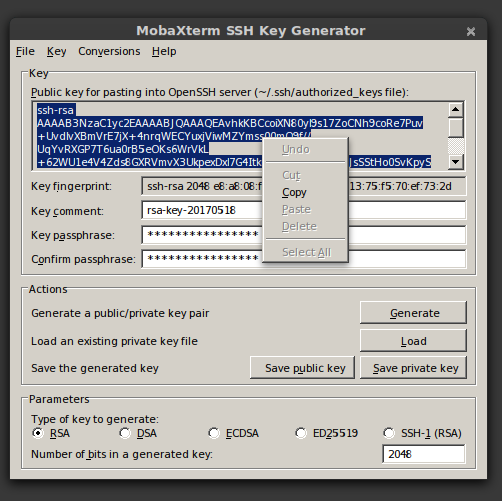
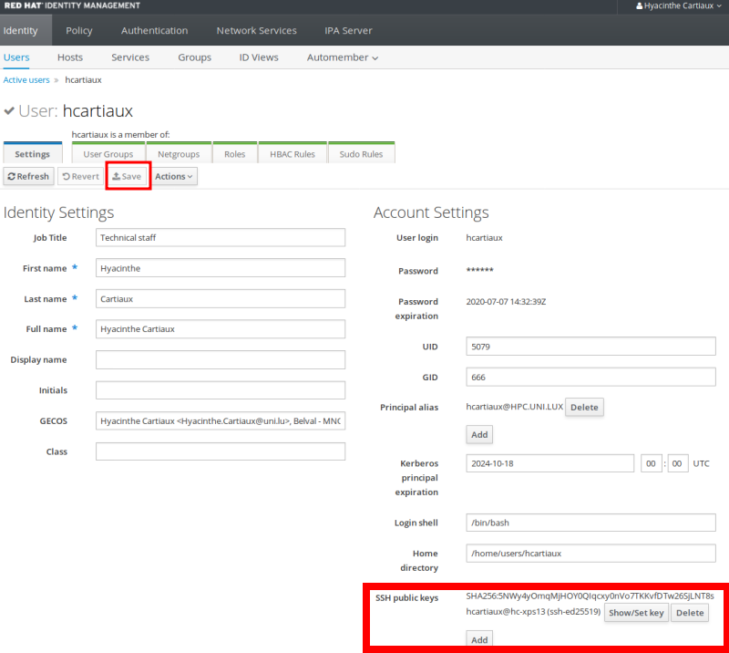
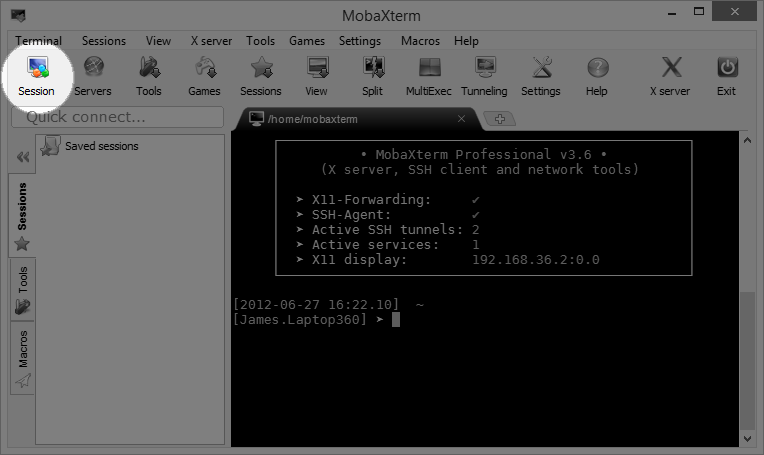
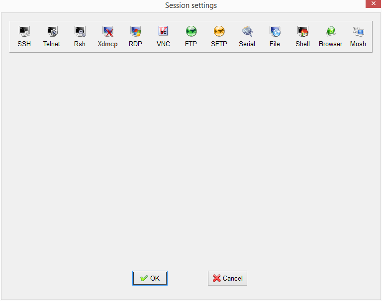

Windows
In this page, we cover two different SSH client software: MobaXterm and Putty. Choose your preferred tool.
MobaXterm¶
Installation notes¶
The following steps will help you to configure MobaXterm to access the UL HPC clusters. You can also check out the MobaXterm demo which shows an overview of its features.
First, download and install MobaXterm. Open the application Start > Program Files > MobaXterm.
Change the default home directory for a persistent home directory instead of the default Temp directory. Go onto Settings > Configuration > General > Persistent home directory. Choose a location for your home directory.
Your local SSH configuration is located in the HOME/.ssh/ directory and consists of:
-
HOME/.ssh/id_rsa.pub: your SSH public key. This one is the only one SAFE to distribute. -
HOME/.ssh/id_rsa: the associated private key. NEVER EVER TRANSMIT THIS FILE -
(eventually) the configuration of the SSH client
HOME/.ssh/config -
HOME/.ssh/known_hosts: Contains a list of host keys for all hosts you have logged into that are not already in the system-wide list of known host keys. This permits to detect man-in-the-middle attacks.
SSH Key Management¶
Choose the method you prefer: either the graphical interface MobaKeyGen or command line generation of the ssh key.
With MobaKeyGen tool¶
Go onto Tools > Network > MobaKeyGen (SSH key generator). Choose RSA as the type of key to generate and change "Number of bits in a generated key" to 4096. Click on the Generate button. Move your mouse to generate some randomness.
Warning
To ensure the security of the platform and your data stored on it, you must protect your SSH keys with a passphrase! Additionally, your private key and passphrase should never be transmitted to anybody.
Select a strong passphrase in the Key passphrase field for your key. Save the public and private keys as respectively id_rsa.pub and id_rsa.ppk.
Please keep a copy of the public key, you will have to add this public key into your account, using the IPA user portal (use the URL communicated to you by the UL HPC team in your "welcome" mail).


With local terminal¶
Click on Start local terminal. To generate an SSH keys, just use the ssh-keygen command, typically as follows:
$> ssh-keygen -t rsa -b 4096
Generating public/private rsa key pair.
Enter file in which to save the key (/home/user/.ssh/id_rsa):
Enter passphrase (empty for no passphrase):
Enter same passphrase again:
Your identification has been saved in /home/user/.ssh/id_rsa.
Your public key has been saved in /home/user/.ssh/id_rsa.pub.
The key fingerprint is:
fe:e8:26:df:38:49:3a:99:d7:85:4e:c3:85:c8:24:5b username@yourworkstation
The key's randomart image is:
+---[RSA 4096]----+
| |
| . E |
| * . . |
| . o . . |
| S. o |
| .. = . |
| =.= o |
| * ==o |
| B=.o |
+-----------------+
Warning
To ensure the security of the platform and your data stored on it, you must protect your SSH keys with a passphrase!
After the execution of ssh-keygen command, the keys are generated and stored in the following files:
- SSH RSA Private key:
HOME/.ssh/id_rsa. Again, NEVER EVER TRANSMIT THIS FILE - SSH RSA Public key:
HOME/.ssh/id_rsa.pub. This file is the ONLY one SAFE to distribute
Configuration¶
This part of the documentation comes from MobaXterm documentation page
MobaXterm allows you to launch remote sessions. You just have to click on the "Sessions" button to start a new session. Select SSH session on the second screen.


Enter the following parameters:
- Remote host:
access-iris.uni.luoraccess-aion.uni.lu - Check the Specify username box
- Username:
yourlogin - as was sent to you in the Welcome e-mail once your HPC account was created
- Port:
8022
Go in Advanced SSH settings and check the Use private key box. Select your previously generated key id_rsa.ppk.

Click on Connect. The following text appears.
================================================================================
Welcome to access1.iris-cluster.uni.lux
WARNING: For use by authorized users only!
_____ _ ____ _ _ __
/ /_ _|_ __(_)___ / ___| |_ _ ___| |_ ___ _ _\ \
| | | || '__| / __| | | | | | | / __| __/ _ \ '__| |
| | | || | | \__ \ | |___| | |_| \__ \ || __/ | | |
| ||___|_| |_|___/ \____|_|\__,_|___/\__\___|_| | |
\_\ /_/
=== Support and community ======================================================
- Technical Docs ........... https://hpc-docs.uni.lu
- Discourse / Forum ........ https://hpc-discourse.uni.lu/
- Helpdesk / Service Now ... https://hpc.uni.lu/support
- User Mailing-list ........ hpc-users@uni.lu
=== HPC utilization as of 2025-02-18 15h00 =====================================
AION batch 74.42%
IRIS batch 47.94%
IRIS gpu 85.42%
IRIS bigmem 51.79%
=== Status =====================================================================
New environment modules (env/development/2023b env/release/default env/release/2020b)
The default module currently points to 'env/release/2020b'
but will be updated to 2023b upon release.
Add 'module use env/release/2020b' to your scripts to ensure that
they will continue working after the switch.
Cluster maintenance complete (https://gitlab.com/uniluxembourg/hpc/support/infra/-/issues/29)
- General update to latest RedHat 8.10
- Slurm update to 23.11.10
- General security update
- New software set release (foss 2023a toolchain)
================================================================================
Last login: Tue Feb 18 10:40:24 2025 from 10.187.28.101
Linux access1.iris-cluster.uni.lux 4.18.0-553.34.1.el8_10.x86_64 x86_64
15:09:51 up 19 days, 5 min, 41 users, load average: 2.24, 2.55, 3.79
[yourlogin@access1 ~]$
Putty¶
Installation notes¶
You need to install Putty and the associated tools, more precisely:
-
PuTTY, the free SSH client
-
Pageant, an SSH authentication agent for PuTTY tools
-
PuTTYgen, an RSA key generation utility
-
PSCP, an SCP (file transfer) client, i.e. command-line secure file copy
-
WinSCP, SCP/SFTP (file transfer) client with easy-to-use graphical interface
The simplest method is probably to download and run the latest Putty installer (does not include WinSCP).
The different steps involved in the installation process are illustrated below (REMEMBER to tick the option "Associate .PPK files (PuTTY Private Key) with Pageant and PuTTYGen"):


Now you should have all the Putty programs available in Start / All Programs / Putty.
SSH Key Management¶
Here you can use the PuTTYgen utility, an RSA key generation utility.
The main steps for the generation of the keys are illustrated below:


Configuration¶
In order to be able to login to the clusters, you will have to add this public key into your account, using the IPA user portal (use the URL communicated to you by the UL HPC team in your "welcome" mail).
The port on which the SSH servers are listening is not the default one (i.e. 22) but 8022. Consequently, if you want to connect to the Iris cluster, open Putty and enter the following settings:
- In Category:Session :
- Host Name:
access-iris.uni.luoraccess-aion.uni.lu - Port:
8022 - Connection Type:
SSH(leave as default) - In Category:Connection:Data :
- Auto-login username:
yourlogin - In Category:SSH:Auth :
- Upload your private key:
Options controlling SSH authentication
Click on Open button. If this is the first time connecting to the server from this computer a Putty Security Alert will appear. Accept the connection by clicking Yes.
Enter your login (username of your HPC account). You are now logged into Iris access server with SSH.
Alternatively, you may want to save the configuration of this connection. Go onto the Session category. Enter the settings you want to save. Enter a name in the Saved session field (for example Iris for access to Iris cluster). Click on the Save button. Next time you want to connect to the cluster, click on Load button and Open to open a new connexion.
Now you'll be able to obtain the welcome banner:
================================================================================
Welcome to access1.iris-cluster.uni.lux
WARNING: For use by authorized users only!
_____ _ ____ _ _ __
/ /_ _|_ __(_)___ / ___| |_ _ ___| |_ ___ _ _\ \
| | | || '__| / __| | | | | | | / __| __/ _ \ '__| |
| | | || | | \__ \ | |___| | |_| \__ \ || __/ | | |
| ||___|_| |_|___/ \____|_|\__,_|___/\__\___|_| | |
\_\ /_/
=== Support and community ======================================================
- Technical Docs ........... https://hpc-docs.uni.lu
- Discourse / Forum ........ https://hpc-discourse.uni.lu/
- Helpdesk / Service Now ... https://hpc.uni.lu/support
- User Mailing-list ........ hpc-users@uni.lu
=== HPC utilization as of 2025-02-18 15h00 =====================================
AION batch 74.42%
IRIS batch 47.94%
IRIS gpu 85.42%
IRIS bigmem 51.79%
=== Status =====================================================================
New environment modules (env/development/2023b env/release/default env/release/2020b)
The default module currently points to 'env/release/2020b'
but will be updated to 2023b upon release.
Add 'module use env/release/2020b' to your scripts to ensure that
they will continue working after the switch.
Cluster maintenance complete (https://gitlab.com/uniluxembourg/hpc/support/infra/-/issues/29)
- General update to latest RedHat 8.10
- Slurm update to 23.11.10
- General security update
- New software set release (foss 2023a toolchain)
================================================================================
Activate the SSH agent¶
To be able to use your SSH key in a public-key authentication scheme, it must be loaded by an SSH agent.
You should run Pageant. To load your SSH key in Pageant, just right-click on the pageant icon in the system tray, click on the Add key menu item and select the private key file you saved while running puttygen.exe and click on the Open button: a new dialog will pop up and ask for your passphrase. Once your passphrase is entered, your key will be loaded in pageant, enabling you to connect with Putty.
Open Putty.exe (connection type: SSH)
- In _Category:Session_:
- Host Name:
access-iris.uni.luoraccess-aion.uni.lu - Port: 8022
- Saved session:
Iris - In Category:Connection:Data:
- Auto-login username:
yourlogin - Go back to Category:Session and click on Save
- Click on Open
SSH Resources¶
- OpenSSH/Cygwin: OpenSSH is available with Cygwin. You may then find the same features in your SSH client even if you run Windows. Furthermore, Cygwin also embeds many other GNU Un*x like tools, and even a FREE X server for windows.
- Putty: Free windowish SSH client
- ssh.com Free for non commercial use windows client